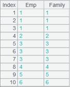

Description:
For linear programming and calculates the minimum value in linear objective function under linear constraints.
Syntax:
lineplan(A,B,C)
Note:
The function uses simplex method to solve regular linear programming problems as well as problems where the basic solution isn몶t a feasible solution (see example: the special problem). The problem needs to be converted to the following standard form when getting parameters:
Target function:
Linear inequality constraints: 
The external library function (See External Library Guide) is for linear programming and calculates the minimum value in linear objective function under linear constraints.
Note the method of getting the target result. When trying to output the minimum value and its coordinates, the former is to multiply the first number of the first sub-sequence by -1, and the coordinates are the first n numbers of the second sub-sequence, where n is the number of x.
Parameter:
|
A |
A sequence representing coefficient matrix |
|
B |
A sequence representing a constraints matrix |
|
C |
The objective function matrix |
Return value:
Sequence
Example:
Here are how to solve simple linear programming problems defined by linear inequalities:
Regular problems:
|
|
A |
|
|
1 |
[[2,1],[1,1],[0,1]] |
Input coefficient matrix A. |
|
2 |
[[10,0],[8,0],[7,0]] |
Input constraints matrix B. |
|
3 |
[[-4,-3],[0,0],[0,0]] |
Input objective function matrix C. |
|
4 |
=lineplan(A1,A2,A3) |
Get the result: the objective function몶s minimum value is -26 and its coordinates are (2.0,6.0) . |
The special problem:
|
|
A |
|
|
1 |
[[1,1],[-1,-1]] |
Input coefficient matrix A. |
|
2 |
[[2,0],[-1,0]] |
Input constraints matrix B. |
|
3 |
[[1,2],[0,0]] |
Input objective function matrix C. |
|
4 |
=lineplan(A1,A2,A3) |
 Get the result: the objective function몶s minimum value is 1 and its coordinates are (1.0,0.0) . |